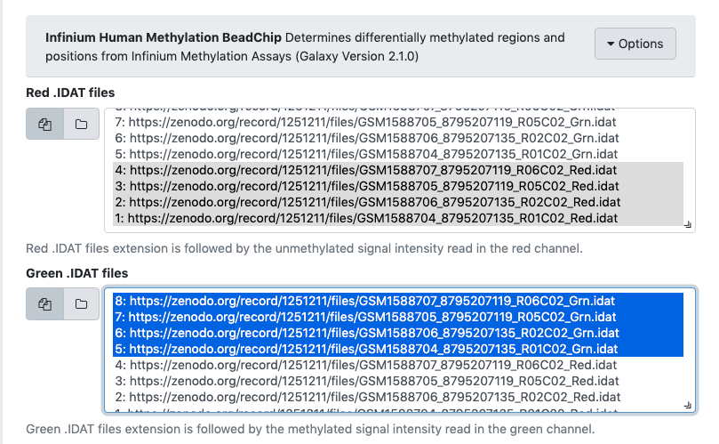
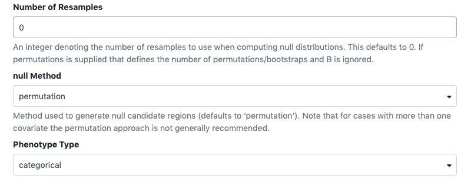
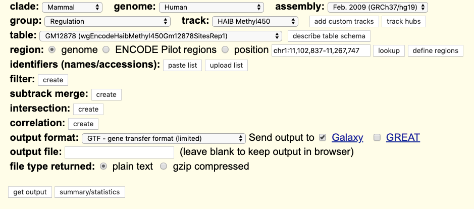
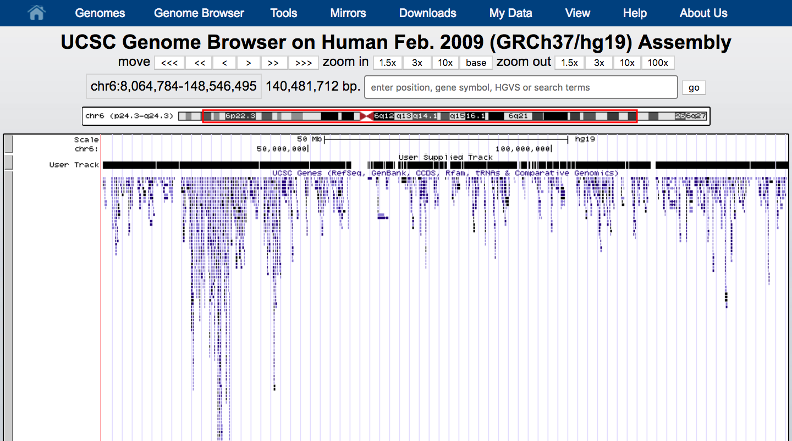

We will use a small subset of the original data. If we run the tutorial on the orginal dataset, analysis will be time consuming and not reproducible Infinium Human Methylation BeadChip computation on the orginal data can be found at case study.
The data we use in this tutorial are available at Zenodo.
Introduction
The field of cancer genomics has demonstrated the power of massively parallel sequencing techniques to inform on genes and specific alterations that drive tumor onset and progression. Although large comprehensive sequence data sets continue to be made increasingly available, data analysis remains an ongoing challenge, particularly for laboratories lacking dedicated resources and bioinformatics expertise. To address this, we have provided training based on Galaxy Infinium Human Methylation BeadChip tool that represents many popular algorithms for detecting somatic genetic alterations from genome and exome data.
Figure 1: How epigenetics mechanism can effect health (adapted from https://commonfund.nih.gov/epigenomics/figure)
This exercise uses datasets from the Cell publication by Hugo et al. 2015. with the goal being the identification of differentially methylated regions and positions associated with treatment resistant melanomas.
Datasets include the Infinium Human Methylation BeadChip array performed in melanoma tumors in a sample of patients pre and post MAPKi and BRAFi treatment with different outcomes (sensitive and resistant). For each sample there is raw green (methylated) and red (unmethylated) colour arrays containing the summarised bead information generated by the Infinium Human Methylation BeadChip scanner.
The Infinium Human Methylation BeadChip uses two different bead types to detect changes in DNA methylation levels. In the figure we can see M - methylated and U - unmethylated bead types. In our study unmethylated and methylated bead signals are reported as green and red colors respectively.
The workflow combines 5 main steps, starting with raw intensity data loading (.idat) and then optional preprocessing and normalisation of the data. The next quality control step performs an additional sample check to remove low-quality data, which normalisation cannot detect. The workflow gives the user the opportunity to perform any of these preparation and data cleaning steps, including a highly recommended genetic variation annotation step resulting in single nucleotide polymorphism identification and removal. Finally, the dataset generated through all of these steps can be used to hunt (find) differentially-methylated positions (DMP) and regions (DMR) with respect to a phenotype covariate.
Raw intensity data loading
The first step of the Infinium Human Methylation BeadChip array analysis is raw methylation data loading (intensity information files for each two colour micro array)
hands_on Hands-on: Data Loading
Create a new history for this tutorial and give it a proper name
tip Tip: Creating a new history
Click the new-history icon at the top of the history panel
If the new-history is missing:
Click on the galaxy-gear icon (History options) on the top of the history panel
Select the option Create New from the menu
Import the following IDAT files from Zenodo or from the data library (ask your instructor)
Open the Galaxy Upload Manager (galaxy-upload on the top-right of the tool panel)
Select Paste/Fetch Data
Paste the link into the text field
Press Start
Close the window
By default, Galaxy uses the URL as the name, so rename the files with a more useful name.
tip Tip: Importing data from a data library
As an alternative to uploading the data from a URL or your computer, the files may also have been made available from a shared data library:
Go into Shared data (top panel) then Data libraries
Find the correct folder (ask your instructor)
Select the desired files
Click on the To History button near the top and select as Datasets from the dropdown menu
In the pop-up window, select the history you want to import the files to (or create a new one)
Click on Import
Run Infinium Human Methylation BeadChiptool with the following parameters:
param-files“red channel files”: all files ending in _Red
param-files“green channel files”: all files ending in Grn

.idat preprocessing
Preprocessing and data quality assurance is an important step in Infinium Methylation Assay analysis. Idat dataset represents two colour data with a green and a red channel and can be converted into methylated and unmethylated signals or into Beta values. The Infinium Human Methylation BeadChip tool extracts and plots the quality control data frame with two columns mMed and uMed which are the medians of methylation signals (Meth and Unmeth). Comparing them against one another allows users to detect and remove low-quality samples.
hands_on Hands-on: Preprocessing
Ilumina methylation array data can be mapped to the genome with or without additional preprocessing methods. Incomplete annotation of genetic variations such as single nucleotide polymorphism (SNP) may affect DNA measurements and disrupt downstream analysis of results. Aryee et al. 2014 It is highly recommended to remove the probes that contain either an SNP at the methylated loci interrogation or at the single nucleotide extension. In this tutorial we will remove probes affected by genetic variation by selecting (Optional) Preprocessing Methodtool.
comment(optional) Normalisation of the data
If your files require normalisation, you might prefer to use one of the other preprocessing tools provided in Infinium Human Methylation BeadChip tool i.e. Preprocess Funnorm or Preprocess Quantile look for recommendation at Aryee et al. 2014.
Differentially methylated regions and positions analysis
The main goal of the Infinium Human Methylation BeadChip analysis is to simplify the way differentially methylated loci sites are detected. The Infinium Human Methylation BeadChip pipeline contains differentially methylated positions (DMPs) detection with respect to a phenotype covariate, and more complex solutions for finding differentially methylated regions (DMRs). Genomic regions that are differentially methylated between two conditions can be tracked using a bumphunting algorithm. The algorithm first implements a t-statistic at each methylated loci location, with optional smoothing, then groups probes into clusters with a maximum location gap and a cutoff size to refer the lowest possible value of genomic profile hunted by our tool.
comment Phenotype table
Phenotype table can be in different sizes with different arguments, however the second column is required to contain phenotype covariate information for each sample.
However, for the purpose of this tutorial we would like you to upload phenotype table from Zenodo repository.
hands_on Hands-on: Import phenotypeTable.txt from Zenodo or data library:
“maxGap Size”:250
We will use the default gap of 250 base pairs (bps), i.e. any two points more than 250 bps away are put in a new cluster.
“Cutoff Size”:0.1
In order to find segments that are positive, near zero, and negative. We need a cutoff which is one number in which case “near zero” default 0.1

“Number of Resamples”:0
Default value 0 for permutation method apply selection of randomized cases with replacement from the original data while using ‘bootstrap’ method.
“nullMethod”:permutation
Method used to generate null candidate regions, must be one of ‘bootstrap’ or
‘permutation’ (defaults to ‘permutation’).
“Phenotype Type”:categorical
Identify regions where methylation is associated with a continuous or categorical phenotype.
Search for UCSC Main in the tool search bar (top left)
“qCutoff Size”:0.5
Diffrentialy methylated positions with an FDR q-value greater than this value will not be returned.
“Variance Shrinkage”: TRUE
Default TRUE as it is recommended when sample sizes are small <10
“Genome Table”: wgEncodeHaibMethyl450 ...
Click on UCSC Maintool. You will be taken to the UCSC table browser
Figure 3: UCSC
Set the following options:
- “clade”: Mammal
- “genome”: Human
- “assembly”: Feb. 2009 (GRCh37/hg19)
- “group”: Regulation
- “track”: HAIB Methyl450
- “table”: GM12878 (wgEncodeHaibMethyl450Gm12878SitesRep1)
- “region”: genome
- “output format”: GTF - gene transfer (limited)
- “Send output to”: Galaxy (only)
Click on the get output button at the bottom of the screen
On the next page, click on the Send Query to Galaxy button
Wait for the upload to finish
We will now map the imported datasets against phenotype covariate and reference genome obtained from UCSC.
Click on the Differentially_Methylated_Positions.bed output in your history to expand it.
Set the database build of your dataset to Human Feb. 2009 (GRCh37/hg19) (hg19)(if it is not set automatically)
tip Tip: Changing Database/Build (dbkey)
Click on the galaxy-pencilpencil icon for the dataset to edit its attributes
In the central panel, change the Database/Build field
Select your desired database key from the dropdown list: hg19
Click the Save button
Click on display at UCSC towards the bottom of the history item.
This will launch UCSC Genome Browser with your Custom Track
Figure 4: UCSC genome track showing differentialy methylated regions located on chromosome 6
question Questions
How do we define phenotype covariate?
solution Solution
Phenotype covariate is the set of observable characteristics of an individual resulting from the gene-environment interactions
Annotation and visualization
In addition to downstream analysis users can annotate the differentially methylated loci at the promoter regions of genes with gene function descriptions, and relationships between these concepts.
hands_on Hands-on: Annotate Differentially Methylated Position
Run chipeakanno annopeakstoolon the output of minfi_dmp with the following parameters
param-file“Differentialy methylated data”: output of minfi dmptool
“bindingType”: StartSite
“bindingRegionStart”:-5000
“bindingRegionEnd”:3000
“Additional Column of Score”:8
Position of column of score optional value if it is required
Cuttool on the previous output adjusting the following parameters to cut “gene_name” column from table of annotated peaks and then get a list of genes
“Cut columns”: c16hhh
“Delimited by”: Tab
param-file“From”: output of chipeakanno annopeakstool
Remove beginningtool of Gene List with the following parameters
“Remove first”: 1
param-file“from”: output of Cuttool
Run clusterProfiler bitrtool on the previous output adjusting the following parameters to convert the list of genes to list of entrez ID
“Input Type Gene ID”: SYMBOL
“Output Type Gene ID”: ENTREZID
Use the output of the clusterProfiler bitr tool to run a GO Enrichment Analysis using clusterProfiler go
Figure 5: Results of GO enrichments analysis for DMPs
ID
Description
pvalue
qvalue
geneID
Count
GO:0048732
gland development
1.38E-58
4.23E-55
PTGS2 / KCNC1 / FZD1 /SLC22A18 /SLC22A3 (…)
372
GO:1901652
response to peptide
3.99E-57
8.13E-54
SULF1/ LAMA5/ MED1 /CFLAR/ MSX2 (…)
359
GO:0048545
response to steroid hormone
1.38EE-54
2.11E-51
HDAC9/ RAB10/ CFLAR/ WDTC1 (…)
394
Conclusion
Epigenetic aberrations which involve DNA modifications give researchers an interest in identifying novel non-genetic factors responsible for complex human phenotypes such as height, weight, and disease. To identify methylation changes researchers need to perform complicated and time consuming computational analysis. Here, the EWAS suite becomes a solution for this inconvenience and provides a simplified downstream analysis available as a ready to run pipline in supplementary materials.
keypoints Key points
Infinium Human Methylation BeadChip is an array based technology to generate DNA methylation profiling at individual CpG loci in the human genome based on Illumina’s bead technology.
Time and cost efficiency followed by high sample output, and overall quantitative accuracy and reproducibility made Infinium Human Methylation BeadChip one of the most widely used arrays on the market.
Aryee, M. J., A. E. Jaffe, H. Corrada-Bravo, C. Ladd-Acosta, A. P. Feinberg et al., 2014 Minfi: a flexible and comprehensive Bioconductor package for the analysis of Infinium DNA methylation microarrays. Bioinformatics 30: 1363–1369.10.1093/bioinformatics/btu049
Hugo, W., H. Shi, L. Sun, M. Piva, C. Song et al., 2015 Non-genomic and Immune Evolution of Melanoma Acquiring MAPKi Resistance. Cell 162: 1271–1285.10.1016/j.cell.2015.07.061
Feedback
Did you use this material as an instructor? Feel free to give us feedback on how it went.
Batut et al., 2018 Community-Driven Data Analysis Training for Biology Cell Systems 10.1016/j.cels.2018.05.012
details BibTeX
@misc{epigenetics-ewas-suite,
author = "Katarzyna Murat and Krzysztof Poterlowicz",
title = "Infinium Human Methylation BeadChip (Galaxy Training Materials)",
year = "2021",
month = "01",
day = "06"
url = "\url{/training-material/topics/epigenetics/tutorials/ewas-suite/tutorial.html}",
note = "[Online; accessed TODAY]"
}
@article{Batut_2018,
doi = {10.1016/j.cels.2018.05.012},
url = {https://doi.org/10.1016%2Fj.cels.2018.05.012},
year = 2018,
month = {jun},
publisher = {Elsevier {BV}},
volume = {6},
number = {6},
pages = {752--758.e1},
author = {B{\'{e}}r{\'{e}}nice Batut and Saskia Hiltemann and Andrea Bagnacani and Dannon Baker and Vivek Bhardwaj and Clemens Blank and Anthony Bretaudeau and Loraine Brillet-Gu{\'{e}}guen and Martin {\v{C}}ech and John Chilton and Dave Clements and Olivia Doppelt-Azeroual and Anika Erxleben and Mallory Ann Freeberg and Simon Gladman and Youri Hoogstrate and Hans-Rudolf Hotz and Torsten Houwaart and Pratik Jagtap and Delphine Larivi{\`{e}}re and Gildas Le Corguill{\'{e}} and Thomas Manke and Fabien Mareuil and Fidel Ram{\'{\i}}rez and Devon Ryan and Florian Christoph Sigloch and Nicola Soranzo and Joachim Wolff and Pavankumar Videm and Markus Wolfien and Aisanjiang Wubuli and Dilmurat Yusuf and James Taylor and Rolf Backofen and Anton Nekrutenko and Björn Grüning},
title = {Community-Driven Data Analysis Training for Biology},
journal = {Cell Systems}
}
congratulations Congratulations on successfully completing this tutorial!
 Katarzyna Murat
Katarzyna Murat Krzysztof Poterlowicz
Krzysztof Poterlowicz